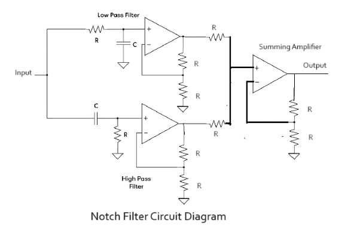
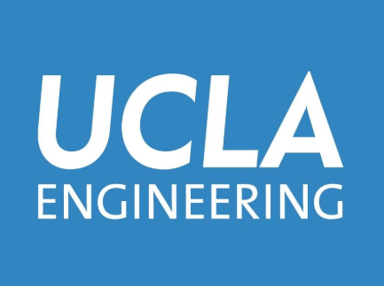
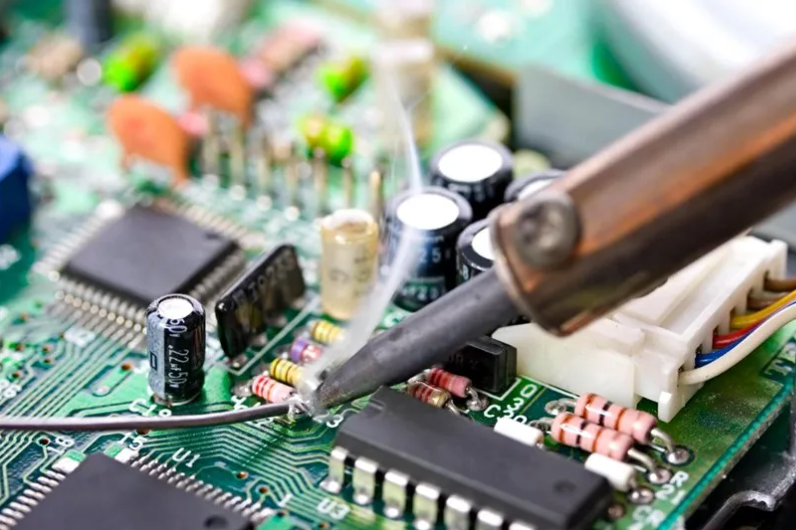
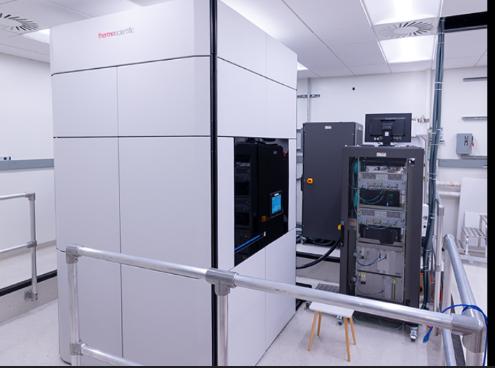
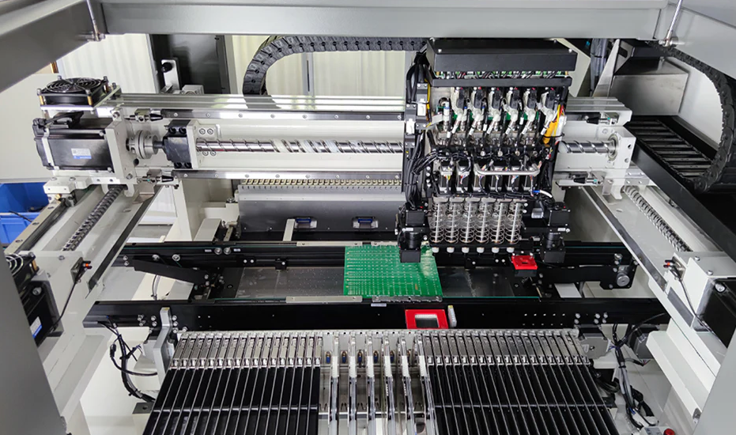
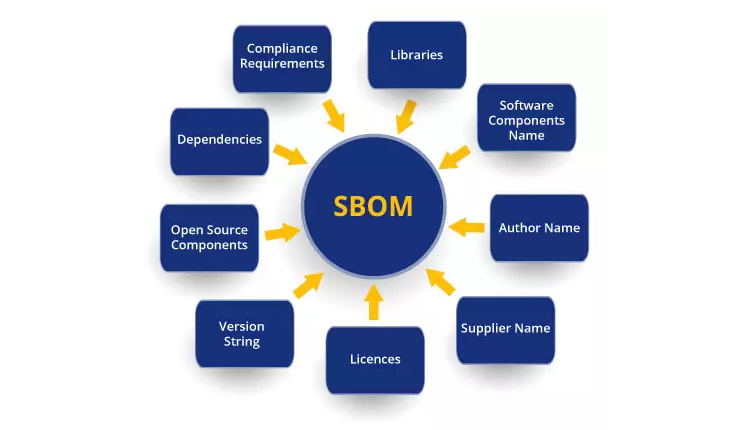
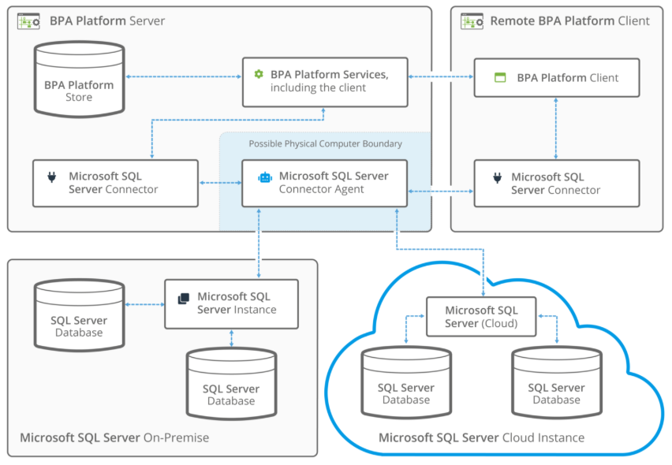
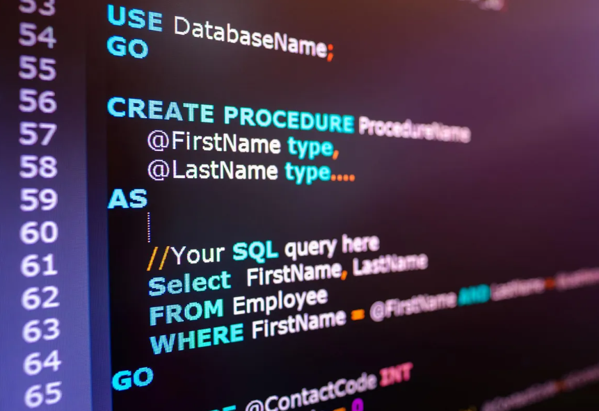

Projects
Personal • School • Clubs
How I Approach Engineering Projects
I care about understanding a system well enough to know exactly why it works, not just that it does. Across hardware and software alike, my process stays the same: define the real problem, build the simplest version that proves it out, then iterate until it holds up under real conditions.
The projects below span RF and embedded hardware, full-stack software, and applied research. Together they reflect how I actually work: hands-on, detail-oriented, and comfortable moving between disciplines.
13 Projects · Ordered by Technical Depth, Hardest First
Nonlinear DC-DC Converter Control
2025 | Hardware • Power Electronics & Controls • UCLA (ECE 141)
Full derivation, stability analysis, and controller design for a switched-mode power converter feeding a constant-power load, the kind of circuit found in railway signaling systems. Constant-power loads draw more current as voltage sags, behaving like negative resistance and destabilizing the system around them, so the task was to model that nonlinearity from first principles and design a controller meeting a strict no-overshoot, 0.05 second settling spec.
- Derived the nonlinear state-space model and linearized it to get a clean analytical stability condition, confirming a 1 kΩ / 20 W / 80 V operating point would be unstable exactly as the math predicted
- Designed a derivative-feedback controller by pole placement to a critically damped double pole, then converted it to a physically realizable state-feedback law
- Verified the design twice in Simulink: about 0.7 ms settling on the linearized model and about 1 ms on the full nonlinear model with saturation limits and a protected denominator
TickLink: A Low-Latency Market-Data Link Simulator
Summer 2026, in progress | Research • RF & Signal Processing • Personal Project
A simulated point-to-point RF link modeling the microwave tower networks high-frequency trading firms use to shave microseconds off market-data delivery between financial hubs. Radio waves travel through air roughly 50% faster than light travels through fiber, and TickLink makes that tradeoff, and the engineering behind it, visible and tunable through a modular signal chain and an interactive dashboard.
- Built a swappable source, modulator, channel, and receiver chain supporting BPSK, QPSK, and 16-QAM with Gray coding and root-raised-cosine pulse shaping
- Modeled AWGN plus microwave-specific impairments (rain fade, multipath) with Gardner timing recovery, Costas carrier recovery, and zero-forcing equalization on receive
- Combined propagation delay and per-stage processing delay into a single end-to-end latency-budget model
- Shipped an interactive Streamlit dashboard with constellation and eye diagrams, a spectrum view, and BER-vs-SNR curves validated against theory
- Built entirely in pip-installable Python (NumPy, SciPy, Streamlit) to stay IDE-agnostic and Windows-native
StrideIQ: Wearable Gait-Analysis System
Winter to Spring 2026 | Hardware • Wearable Systems • UCLA Senior Capstone, 5-person team
A dual-foot wearable and cloud pipeline that turns raw motion-sensor data into per-foot running biomechanics, outdoors instead of in a lab. Clinical gait analysis is accurate but expensive and single-session, and consumer wearables track pace and heart rate but not the per-foot detail tied to running injuries. StrideIQ closes that gap for about $140 in parts per unit.
- Soldered and assembled the wearable node hardware (Arduino Nano RP2040, IMU, LiPo battery) and iterated through three enclosure and battery revisions to hit the weight and reliability targets
- Co-owned a serverless AWS backend (Cognito, AppSync, DynamoDB, S3, containerized Lambda) running a Butterworth-filtered gait pipeline for cadence, ground contact time, and stride asymmetry
- Ran a real-time architecture trade study across three AWS approaches before choosing WebSocket plus Lambda for live in-run feedback
- Diagnosed and fixed a DynamoDB write failure and an iOS background-execution bug that silently killed BLE and GPS
- Validated across 20 outdoor field trials against a Garmin Forerunner 965 and Apple Watch Ultra 2: 1.74% to 1.81% mean error on cadence and 2.14% on ground contact time, beating the team's stretch accuracy target

10 kHz Active Notch Filter: Analog Design
2024 | Hardware • Circuit Design • UCLA
Designed and analyzed a narrowband active notch filter to suppress SMPS-induced noise in the 10 Hz to 50 kHz audio band while maintaining a stable output from a current-source input.
- Achieved >74 dB stopband attenuation at 10 kHz with <2 kHz notch bandwidth
- Met a 10 kΩ passband transimpedance target (100 mV from 10 µA input current)
- Derived and applied closed-form design equations under realistic inductor and resistor limits
- Validated behavior using SPICE-style simulations and lab-style calculations

Flexible Class III Bioelectronic IC Research
2022 to 2023 | Research • Integrated Bioelectronics • UCLA
Contributed to a UCLA Integrated Bioelectronics research effort developing stretchable, medical-grade circuits for physiological sensing and stimulation in collaboration with engineers and physicians.
- Performed voltage tolerance, thermal endurance, and fatigue testing on flexible ICs
- Modeled analog behavior and stress response using LTspice and MATLAB
- Helped validate device reliability under strain for potential clinical applications
- Worked with cross-disciplinary teams at UCLA bridging EE, bioengineering, and medicine

X-Ray Diffraction Instrumentation Module
2023 to 2024 | Hardware • Instrumentation • California NanoSystems Institute
Designed, assembled, and validated a custom electronics module to interface with an X-ray diffraction (XRD) system within CNSI's materials characterization facilities, taking the design from breadboard prototype to a lab-installed instrument.
- Soldered and assembled mixed through-hole and SMT components into a reliable module
- Migrated the design from temporary breadboard wiring to a robust lab-ready hardware unit
- Characterized and tested subcircuits using multimeters and oscilloscopes before integration
- Verified signal integrity and isolation to ensure safe operation around high-voltage XRD hardware
- Collaborated with CNSI staff and researchers to tune performance for real experimental workflows

EMI Sensor Calibration & Radar Simulation
2024 | Hardware • Signal Processing • California NanoSystems Institute
Built a calibration and analysis pipeline for multi-axis EMI sensors used in radar-inspired research at the California NanoSystems Institute (CNSI), combining Python-based tooling with signal-processing workflows.
- Automated calibration for 50+ multi-axis EMI sensor systems, replacing manual lab routines
- Improved sensor accuracy and noise stability by ~60% using Python, NumPy, and SciPy
- Integrated real-time data visualization to debug interference patterns and long-term drift
- Collaborated with CNSI researchers working on RF, EMI/EMC, and radar applications
PTO Compliance Dashboard
Summer 2026 | Software Engineering • Business Intelligence • Bank of America
Architected an end-to-end BI platform that replaced a fragmented, manual SQL script validation process with a live, enterprise-grade compliance monitoring system, giving the team real-time, cross-server visibility into a stored procedure that used to require ad hoc script interpretation.
- Designed and deployed two production BI deliverables: a real-time operational dashboard with color-coded pass/fail indicators and multi-dimensional slicers, plus a historical analytics suite for execution-frequency tracking and automated configuration-drift detection
- Engineered custom Power Query ETL pipelines to transform an EAV-structured source, a schema poorly suited to BI tooling, into a clean, analytics-ready model through custom status-normalization and server-identity merge logic
- Reverse-engineered backend ActionID parameter logic and mapped it directly to purpose-built dashboard features, bridging raw procedural output and stakeholder-ready reporting
- Led a QA and DAX logic audit that caught a mislabeled core metric and a silent mismatch between automated and manual delta-comparison views before it reached decision-makers
- Shipped through 8 major iterations (V8 in production), eliminating manual script interpretation and standardizing compliance reporting across every SQL domain the team owns

Mixed-Signal PCB Validation & Test Automation
2023 | Hardware • Embedded Testing • California NanoSystems Institute
Supported mixed-signal PCB design, bring-up, and automated testing in an electronics research environment at CNSI, bridging hands-on lab work with Python/MATLAB scripting.
- Used SMT tools and PCB layouts to assemble and validate prototype boards for active projects
- Wrote Python/MATLAB test scripts to automate validation across 20+ hardware boards
- Used Keysight/Agilent-style oscilloscopes, multimeters, and analyzers to confirm design specs
- Helped maintain consistent test workflows across multiple CNSI electronics projects

SBOM Vulnerability Analysis Web Application
2025 | Full Stack • Security Engineering • Bank of America
Built a full-stack platform used internally at Bank of America to analyze Software Bills of Materials (SBOMs), surface dependency risks, and generate CVE vulnerability reports for 200+ applications.
- Developed a Python/Flask backend API to ingest SBOM files and map components to NIST/NVD CVE databases
- Created a React dashboard for real-time risk scoring and vulnerability breakdowns
- Automated recurring compliance scans, highlighting high-severity issues for engineering teams
- Enabled teams to identify and resolve dependency risks significantly faster than manual workflows
- Integrated role-based access controls and secure token-based API access for internal users

Position Exposure Aggregation Engine
2025 | Software Engineering • Data Pipelines • Bank of America
Built a Python/T-SQL engine to aggregate position and exposure data across multiple Global Markets trading books, using vector-style transformations to power internal risk and reporting workflows.
- Loaded and joined multi-table position data into in-memory NumPy/Pandas structures for fast aggregation
- Implemented matrix transformations to roll up exposure by desk, product, and currency
- Optimized slow queries by restructuring joins and pre-computing intermediate views, cutting key workloads from minutes to seconds
- Exported summarized exposure tables back to SQL Server for integration with existing dashboards and reporting tools

Enterprise SQL Server Automation Platform
2025 | Software Engineering • Backend • Bank of America
Designed and deployed an automation framework for managing access control across Bank of America's Global Markets Microsoft SQL Server infrastructure (1,000+ databases).
- Engineered Python + T-SQL tools to revoke permissions, validate logins, and prevent orphaned accounts
- Reduced recurring manual workload by ~70% through cross-database scanning and cleanup
- Implemented compliance-grade logging, rollback safety, and clear audit trails for auditors
- Built secure PowerShell modules for privileged maintenance tasks on Windows Server hosts
- Standardized privilege lifecycles to reduce stale access and strengthen internal controls
Arch Linux: Daily Driver System Build
2023 to Present | Software • Personal Project
Built and maintain a custom Arch Linux workstation as my primary environment for coursework at UCLA, research work at CNSI, and development during my Bank of America internship.
- Performed manual installation: disk partitioning, bootloader, kernel, and init configuration
- Configured a full development stack for C/C++, Python, SQL, and embedded workflows
- Automated provisioning using Bash scripts and pacman hooks for reproducible setups
- Customized a tiling window manager workflow for efficient multi-monitor productivity
- Integrated Docker, Git, and virtualization tools for safe testing of software and hardware projects